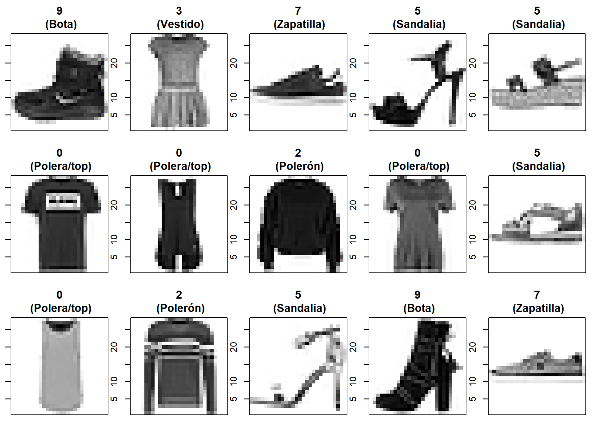

Exploraremos un ejemplo práctico utilizando la biblioteca keras en R, pero esta vez con el conjunto de datos Fashion MNIST, que incluye imágenes de artículos de ropa, en lugar de dígitos escritos a mano. Este dataset proporciona una variedad de imágenes de ropa en escala de grises de 28 \times 28 píxeles, y se puede descargar directamente utilizando keras. Nuestro objetivo será implementar un modelo de red neuronal convolucional (CNN), que es particularmente adecuado para este tipo de datos de imágenes, para clasificar estos artículos de moda en diferentes categorías.
El conjunto de datos Fashion MNIST es un excelente recurso para aquellos interesados en el procesamiento de imágenes, ofreciendo una alternativa más desafiante que el tradicional MNIST. Al igual que con MNIST, este conjunto de datos se incluye en la biblioteca keras y se puede cargar usando la función dataset_fashion_mnist(). Después de cargar los datos, procederemos a dividirlos en subconjuntos para entrenamiento (x_train, y_train) y prueba (x_test, y_test), preparando tanto las imágenes (input del modelo) como las etiquetas (output del modelo) para el entrenamiento y evaluación de nuestro modelo CNN.
Fashion MNIST es un conjunto de datos de imágenes de artículos de Zalando Research, que consta de un conjunto de entrenamiento de 60,000 ejemplos y un conjunto de prueba de 10,000 ejemplos. Cada ejemplo es una imagen en escala de grises de 28 \times 28 píxeles, asociada con una etiqueta de una de 10 clases diferentes. El propósito de Fashion MNIST es servir como una alternativa al conjunto de datos MNIST original para la evaluación de algoritmos de aprendizaje automático. Comparte el mismo tamaño de imagen y estructura de divisiones de entrenamiento y prueba.
A continuación, un ejemplo de cómo se ven los datos (cada clase ocupa tres filas):
1.2 Carga de librerías y datos
# Libreríaslibrary(tensorflow)library(keras)
Warning: package 'keras' was built under R version 4.3.3
# Cargamos el dataset 'fashion MNIST', incluído en `Keras`fashion_mnist <-dataset_fashion_mnist()# Separamos en datos de entrenamientotrain_images <- fashion_mnist$train$xtrain_labels <- fashion_mnist$train$ytest_images <- fashion_mnist$test$xtest_labels <- fashion_mnist$test$y
En este punto tenemos cuatro arreglos: Los arreglos train_images y train_labels son los datos de entrenamiento (es decir, los datos que el modelo usa para aprender). El modelo se prueba contra el conjunto de prueba: los arreglos test_images y test_labels. Cada imagen es un arreglo de 28 x 28, con valores de píxeles que varían entre 0 y 255. Las etiquetas son arreglos de enteros, que varían de 0 a 9. Estos corresponden a la clase de ropa que la imagen representa:
# Son 60.000 imagenes en el conjunto de entrenamiento, con cada imagen de tamaño 28 x 28 pixelesdim(train_images)
[1] 60000 28 28
# Por lo tanto, hay 60.000 etiquetasdim(train_labels)
[1] 60000
# Cada etiqueta posee un valor entero entre 0 y 9train_labels[1:20]
[1] 9 0 0 3 0 2 7 2 5 5 0 9 5 5 7 9 1 0 6 4
Visualizamos algunas imagenes:
# Visualizar los datos como imagenespar(mfcol=c(3,5))par(mar=c(1, 1, 3, 1), xaxs='i', yaxs='i')for (i in1:15) { im <- train_images[i,,] im <-t(apply(im, 2, rev)) image(1:28, 1:28, im, col=gray(1-(0:255)/255),xaxt='n', main=paste0(train_labels[i], "\n (", class_names[train_labels[i]+1], ")"))}

Los datos de etiquetas (labels) son un vector de enteros con valores que van del 0 al 9. Para preparar estos datos para el entrenamiento, codificamos los vectores en matrices de clases binarias utilizando la función de Keras to_categorical():
Inicialización de pesos aleatorios: Se establece una semilla para asegurar la reproducibilidad de los resultados al inicializar los pesos de la red de manera aleatoria.
Configuración del tamaño de entrada y salida: target_size representa las dimensiones de las imágenes, y output_n es el número de clases (etiquetas) que la red deberá predecir.
Construcción del modelo:
Capa de convolución: Aplica 32 filtros de tamaño 3x3 con la función de activación ReLU, manteniendo el tamaño de la imagen original mediante el uso de padding ‘same’.
Normalización por lotes: Normaliza las activaciones de la capa anterior, lo que ayuda a acelerar la convergencia durante el entrenamiento.
Capa Max Pooling: Reduce la dimensionalidad espacial (ancho y alto) de la entrada, seleccionando el valor máximo de cada ventana de tamaño 2x2.
Capa de aplanamiento (Flatten): Transforma la matriz 2D de características en un vector 1D para poder alimentar las capas densas siguientes.
Capas densas (MLP): Dos capas densas con 128 y 64 unidades respectivamente, cada una con función de activación ReLU y regularización mediante Dropout al 50%, lo que ayuda a prevenir el sobreajuste.
Capa de salida: Capa densa que utiliza la función de activación softmax para obtener una distribución de probabilidad sobre las output_n clases posibles.
Visualizamos un resumen del modelo:
summary(model)
Model: "Modelo_prueba"
________________________________________________________________________________
Layer (type) Output Shape Param # Trainable
================================================================================
conv2d (Conv2D) (None, 28, 28, 32) 320 Y
batch_normalization (BatchNo (None, 28, 28, 32) 128 Y
rmalization)
max_pooling2d (MaxPooling2D) (None, 14, 14, 32) 0 Y
flatten (Flatten) (None, 6272) 0 Y
dense_1 (Dense) (None, 128) 802944 Y
dropout_1 (Dropout) (None, 128) 0 Y
dense (Dense) (None, 64) 8256 Y
dropout (Dropout) (None, 64) 0 Y
Output (Dense) (None, 10) 650 Y
================================================================================
Total params: 812298 (3.10 MB)
Trainable params: 812234 (3.10 MB)
Non-trainable params: 64 (256.00 Byte)
________________________________________________________________________________
Semilla de Tensorflow: La función tf$random$set_seed(100) se utiliza para asegurar que los resultados sean reproducibles fijando una semilla para la inicialización aleatoria de los pesos en la red.
Compilación del modelo:
Pérdida: Se especifica categorical_crossentropy como la función de pérdida. Esta función es adecuada cuando las etiquetas están codificadas como vectores one-hot (cada etiqueta es un vector donde solo un elemento es 1 y el resto son 0).
Optimizador: Se utiliza optimizer_adam, que es un método de optimización basado en el descenso de gradiente estocástico adaptativo. Los parámetros como learning_rate y beta_1 pueden ajustarse para controlar la velocidad de aprendizaje y el momento, respectivamente.
Métrica: La métrica de ‘accuracy’ se usa para monitorear el desempeño del modelo durante el entrenamiento y la validación.
Nota: sparse_categorical_crossentropy es otra función de pérdida que se puede utilizar en lugar de categorical_crossentropy cuando las etiquetas de clase están en formato de enteros. En contraposición, categorical_crossentropy requiere que las etiquetas estén en formato one-hot. El uso de sparse_categorical_crossentropy simplifica la gestión de las etiquetas ya que no requiere la conversión de etiquetas a formato one-hot, lo que es especialmente útil cuando se manejan muchas clases. Este tipo de adaptaciones permiten optimizar el manejo de la memoria y simplificar el preprocesamiento de los datos cuando se trabaja con un gran número de clases en tareas de clasificación.
3.3 Entrenamiento del modelo
# Entrenamiento del modelohistory <- model %>%fit(# Datos de entrenamientox = train_images,y = train_labels,# Épocas de entrenamientoepochs =10, # validation datavalidation_split =0.2,verbose =2 )
Entrenamiento del modelo: Se usa la función fit para entrenar el modelo. history es un objeto que guarda la historia del entrenamiento, incluyendo las métricas de desempeño como la pérdida y precisión, tanto para el entrenamiento como para la validación en cada época.
Datos de entrenamiento (x, y):
x = train_images son las imágenes que se utilizan para entrenar el modelo.
y = train_labels son las etiquetas correspondientes a cada imagen, que indican la clase o categoría de la imagen.
Épocas de entrenamiento (epochs): El modelo se entrenará pasando por el conjunto completo de datos de entrenamiento un total de 10 veces. Cada paso por completo del conjunto de datos se denomina una “época”.
Datos de validación (validation_split): Se reserva el 20% del conjunto de datos de entrenamiento para validar el modelo. Esto significa que este porcentaje no se utilizará para el entrenamiento directo sino para evaluar la generalización del modelo a nuevos datos no vistos durante el entrenamiento.
verbose: Controla la salida de información durante el entrenamiento, con 0 para ningún mensaje, 1 para mostrar una barra de progreso detallada, y 2 para mostrar una línea de resumen por cada época.
4 Resultados
4.1 Del entrenamiento
Mostramos el resultado del entrenamiento y algunas métricas:
Parece que nuestro modelo logra clasificar relativamente bien los tipos de prendas, aunque se debe efectuar un análisis posterior respecto de las prendas mal clasificadas.